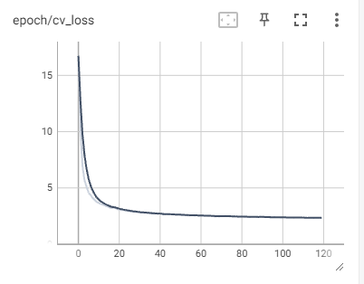
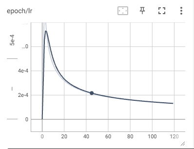
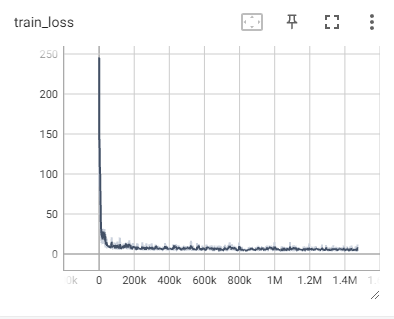
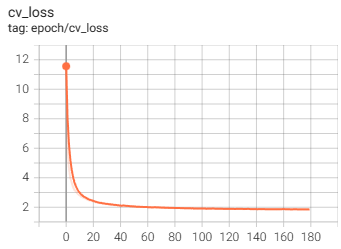
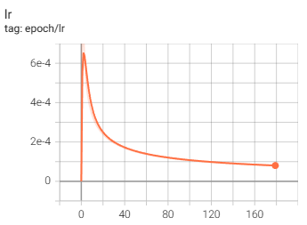
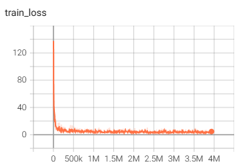
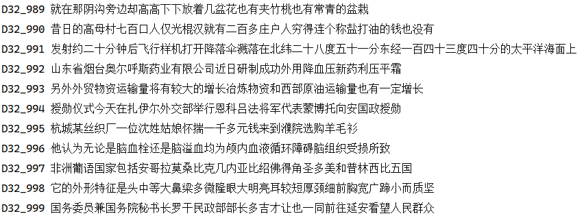
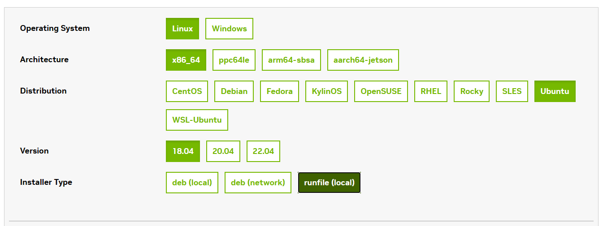

5-WeNet实验小结¶
1、开源模型¶
下载地址：https://github.com/wenet-e2e/wenet/blob/main/docs/pretrained_models.en.md
Datasets |
Checkpoint Model |
|
|---|---|---|
aishell2 |
||
multi_cn |
2、开源multi_CN数据集¶
OpenSLR: http://www.openslr.org/resources.php
数据集 |
内容 |
时长（小时） |
训练集大小 |
录制人 |
标注准确率 |
数据下载 |
|---|---|---|---|---|---|---|
aidatatang_200zh |
口语化句子 |
200 |
18G |
600 |
>98% |
|
aishell1 |
智能家居、无人驾驶、工业生产等11个领域 |
178 |
17G |
400 |
98% |
|
magicdata |
互动问答，音乐搜索，SNS信息，家庭指挥和控制 |
755 |
78G |
1080 |
>98% |
|
primewords |
100 |
11G |
296 |
>98% |
||
stcmds |
网上语音聊天和智能语音控制 |
13G |
855 |
|||
thchs |
主要是新闻 |
2.8G |
总共包含1021000条音频数据，443065394个帧，词汇表有7028个单元
3、模型训练¶
训练完成的模型可以使用tensorboard查看，如果在容器内运行则需要添加端口映射
tensorboard --logdir=./tensorboard --host=0.0.0.0 --port 2001
可以获得训练时的训练损失、验证损失和lr。
Multi_CN-Small 模型：



Multi_CN-Medium 模型：



Multi_CN 模型：
Model |
Conformer(S) |
Conformer(M) |
Conformer(L) |
|---|---|---|---|
参数数目 |
18,110,490 |
48,350,186 |
|
编码器层数 |
9 |
12 |
15 |
编码器维度 |
144 |
256 |
512 |
注意力头数目 |
4 |
4 |
4 |
卷积核大小 |
15 |
15 |
15 |
解码器层数 |
3 |
6 |
6 |
epochs |
120 |
180 |
|
模型大小 |
70.874MB |
189.082MB |
4、测试结果¶
4.1 测试数据集¶
Dataset |
语音条数 |
|---|---|
Aishell |
7176 |
aidatatang |
48144 |
magicdata |
24279 |
thchs |
2495 |
4.1 官方提供的 Multi-CN 测试结果¶
官方下载的multi-cn预训练模型结果，模型结构为Unified Conformer，chunk size为16，模型大小为213.4MB
Dataset |
attention decoder |
ctc greedy search |
ctc prefix beam search |
attention rescoring |
|---|---|---|---|---|
Aishell |
1.32% |
2.73% |
2.73% |
1.71% |
aidatatang |
3.78% |
5.15% |
5.15% |
4.21% |
magicdata |
2.60% |
3.81% |
3.79% |
2.94% |
thchs |
10.16% |
11.85% |
11.85% |
10.80% |
thchs是带噪的测试语音，所以效果较差，且转录文本字数较多，平均一段音频对应30段中文字，而且句子也特别复杂，下面是示例：

如果使用LM模型，使用WFST进行解码，下载官方runtime模型final.zip，测试在不同数据集下的WER:
Dataset |
WFST |
|---|---|
Aishell |
1.80% |
aidatatang |
3.34% |
magicdata |
2.04% |
thchs |
11.99% |
词典里面没有英文，对英文的识别能力显著下降
4.2 Multi_CN-Medium 测试结果¶
自己的预训练模型结果，模型结构为UnifiedConformer, chunk size为16，找到最好的cv loss的模型，采用30次模型平均可以获得更好的效果，模型大小为189.057MB，选择的epoch为[177 171 165 172 164 175 170 176 155 173 157 178 179 147 166 152 149 144 169 174 141 138 163 162 167 150 154 148 146 168]，得到平均后的模型avg_30.pt，然后对其在测试集上进行测试：
Dataset |
attention decoder |
ctc greedy search |
ctc prefix beam search |
attention rescoring |
|---|---|---|---|---|
Aishell |
4.37% |
5.49% |
5.50% |
4.57% |
aidatatang |
4.02% |
5.30% |
5.30% |
4.36% |
magicdata |
2.53% |
3.51% |
3.50% |
2.77% |
thchs |
13.31% |
14.47% |
14.74% |
13.41% |
自己的预训练模型不如下载的可能原因分析：建模单元少了3000（自己的词汇表为7028，官方的为11008），主要体现在对英文模型的建模能力弱了很多。训练数据主要来源于 magicdata，因此在该数据集测试集下的效果较好。
4.3 Multi_CN-Small 测试结果¶
自己的预训练模型结果，模型结构为UnifiedConformer, chunk size为16，找到最好的cv loss的模型，采用20次模型平均可以获得更好的效果，模型大小为 70.874MB，选择的epoch为[119 115 111 117 113 114 118 106 116 108 112 104 105 102 110 109 99 101]，得到平均后的模型avg_20.pt，然后对其在测试集上进行测试：
Dataset |
attention decoder |
ctc greedy search |
ctc prefix beam search |
attention rescoring |
|---|---|---|---|---|
Aishell |
5.36% |
6.67% |
6.67% |
5.59% |
aidatatang |
5.27% |
6.57% |
6.56% |
5.62% |
magicdata |
3.49% |
4.53% |
4.50% |
3.71% |
thchs |
13.82% |
16.08% |
16.08% |
14.76% |
4.4 额外实验¶
模型平滑对性能的影响，解码方式选择attention_rescoring
数据集 |
with Average（30） |
last epoch |
|---|---|---|
AISHELL |
4.57% |
4.88% |
THCHS |
13.41% |
14.22% |
量化模型对性能的影响（Runtime模式）JIT模型·：
数据集 |
quantization(int 8) |
FP32 |
|---|---|---|
AISHELL |
||
THCHS |
不同模型在 attention_rescoring 解码方式下的性能对比：
模型 |
AISHELL |
Multi_CN small |
Multi_CN medium |
|---|---|---|---|
Aishell |
4.62% |
5.59% |
4.57% |
aidatatang |
23.69% |
5.62% |
4.36% |
magicdata |
24.88% |
3.71% |
2.77% |
thchs |
20.13% |
14.76% |
13.41% |
不同模型 with-LM 的性能
数据集 |
AISHELL |
Multi_CN small |
Multi_CN medium |
|---|---|---|---|
AISHELL |
|||
THCHS |
5、心得记录¶
动态bath size和静态batch size
参考：动态batch和静态batch的原理和代码详解_少游223的博客-CSDN博客
wenet支持两种batch训练方式
第一种是常规的静态batch方案，但当语音长短差异过大时，显存利用率低，同时带来显存oom风险
第二种是动态batch方案，不指定batch_size的大小，只限制batch中的最大总帧数，这样就能充分利用显存，同时不会有oom的风险
静态batch代码实现：
def static_batch(data, batch_size=16):
for sample in data:
buf.append(sample)
if len(buf) >= batch_size:
yield buf
buf = []
if len(buf) > 0:
yield buf
动态batch代码实现：
def dynamic_batch(data, max_frames_in_batch=12000):
buf = []
longest_frames = 0
for sample in data:
assert 'feat' in sample
assert isinstance(sample['feat'], torch.Tensor)
new_sample_frames = sample['feat'].size(0)
longest_frames = max(longest_frames, new_sample_frames)
frames_after_padding = longest_frames * (len(buf) + 1)
if frames_after_padding > max_frames_in_batch:
yield buf
buf = [sample]
longest_frames = new_sample_frames
else:
buf.append(sample)
if len(buf) > 0:
yield buf
解决爆显存的方法
1、若采用static_batch训练，减少batch size，对于24G的RTX 4090，需要减少batch size为4；若采用dynamic_batch训练，为了平衡训练速度和显存，设置max_frame_in_batch为24000，这两种方法可以有效解决OOM的问题，但是训练速度会有明显下降
2、减小filter_conf设置项的max_length，减少为20480，对OOM有一定的缓解，但缓解作用不大
3、网上说tensorboard会影响速度，但感觉没啥影响
训练过程中GPU利用率忽高忽低，有时为0
把数据集从机械硬盘放到固态硬盘可以有效解决
Python永久设置路径
当需要import文件夹中的.py文件时，会出现
ModuleNotFoundError: No module named 'wenet'的报错信息，需要自主添加path：临时添加：sys.path.append()，需要修改代码，且为临时修改，程序退出后需要清空环境变量
在site-packet下建立一个wenet_path.pth文件，并添加需要自定义包含引入的路径
vim ~/anaconda3/envs/wenet/lib/python3.8/site-packages/wenet_path.pth
添加以下内容：
/home/lzl/python/wenet/wenet-main
核对路径是否添加
>>> import sys
>>> sys.path
['', '/home/lzl/anaconda3/envs/wenet/lib/python38.zip', '/home/lzl/anaconda3/envs/wenet/lib/python3.8', '/home/lzl/anaconda3/envs/wenet/lib/python3.8/lib-dynload', '/home/lzl/anaconda3/envs/wenet/lib/python3.8/site-packages', '/home/lzl/python/wenet/wenet-main']
>>> from wenet.dataset.dataset import Dataset
没有出现报错信息说明路径已成功添加
Ubuntu下载多版本的CUDA
下载CUDA Toolkit
首先去官网https://developer.nvidia.com/cuda-toolkit-archive下载对应版本的 CUDA Toolkit，采用runfile(local)方式

可以得到
cuda**.run文件安装CUDA
使用命令安装
sudo sh cuda**.run
在安装选项中仅安装CUDA Toolkit，其它如驱动、示例等不安装
安装cudnn
进入cudnn官网https://developer.nvidia.com/rdp/cudnn-archive，下载tar包，采用
tar -xf cudnn**.tgz解压，解压后
sudo cp cudnn-linux-x86_64-8.8.1.3_cuda11-archive/include/cudnn.h /usr/local/cuda-11.6/include/
sudo cp cudnn-linux-x86_64-8.8.1.3_cuda11-archive/lib/libcudnn* /usr/local/cuda-11.6/lib64/
sudo chmod a+r /usr/local/cuda-11.6/include/cudnn.h
sudo chmod a+r /usr/local/cuda-11.6/lib64/libcudnn*
新建环境变量并建立软链接
新建环境变量：
# 打开环境变量目录
vim ~/.bashrc
# 添加
export PATH=/usr/local/cuda/bin:$PATH
export LD_LIBRARY_PATH=/usr/local/cuda/lib64:$LD_LIBRARY_PATH
环境变量建好后就不用更改了。
建立软链接用于CUDA版本自动切换
# 删除之前的软链接
sudo rm -rf /usr/local/cuda
# 创建新的cuda软链接
sudo ln -s /usr/local/cuda-11.6 /usr/local/cuda